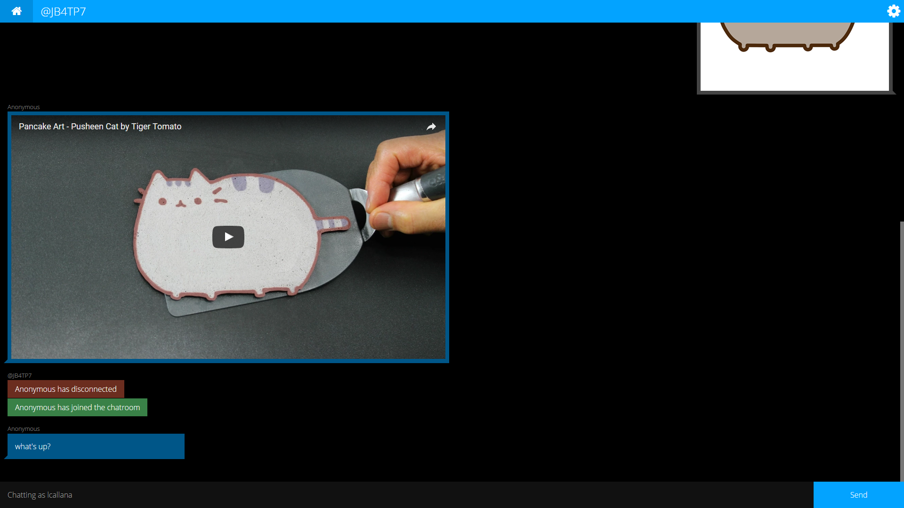
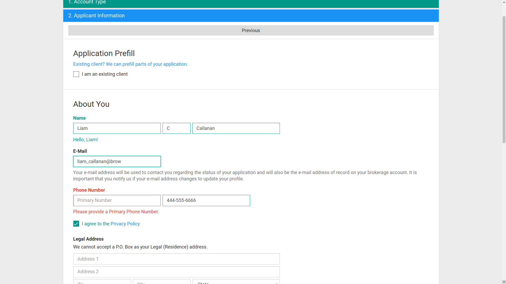

This was another project for CS123: Modern Web Applications, which focused on using websockets as a way to send information back and forth between the client and server in realtime. I decided to have fun with it, adding a Windows 8 inspired theme and image/youtube link integration.
RAO
Riperian Account Opening
Also known as Riperian Account Opening, this web application allows for flexible, extensible creation of account opening forms without needing to know any programming languages. It's currently being developed for Riperian entirely by myself. AngularJS allows the app to dynamically load interactive elements, and a customized Bootstrap theme (which I made based on Google's material design) provides a coherent interface.
